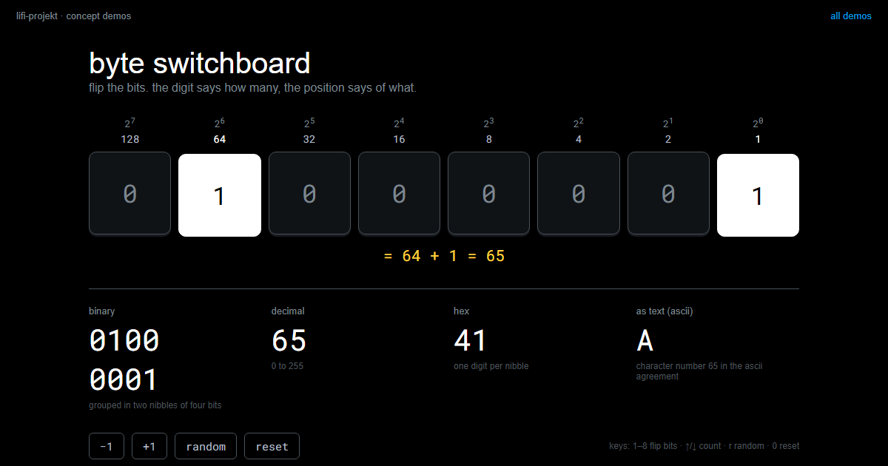
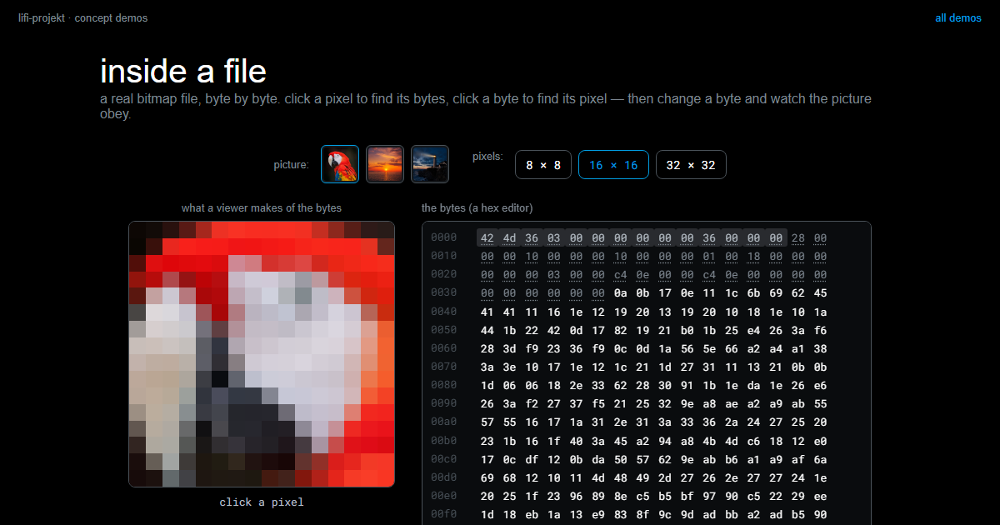

Number Systems
Summary
That 123 means one hundred and twenty-three is an agreement, not a law of nature. Every place in the number carries a power of ten, the digit says how often, and the ten itself comes from nothing deeper than the number of fingers on two hands. The same recipe works with any base: give the places powers of eight, or of two, and you can read the number without learning a single new rule. Computers count with two digits because two states are the cheapest thing you can build reliably, they group eight of those digits into a byte, and they use base 16 as a reading aid, because one hex digit fits exactly four bits.
In this chapter, we address the following questions:
- Why does
123mean one hundred and twenty-three, and what is hidden in that notation? - How do you count and read numbers in base 2, and in any other base?
- Why do computers use two digits, of all things?
- What is a byte, and why can it take exactly 256 values?
- Why does a byte fit into exactly two hexadecimal digits?
- What is the difference between a kilobyte and a kibibyte, and why does a 1 TB disk show up as 931 GB?
You need this concept for Code Systems: to work out why a capital A is the bit pattern 01000001, you have to be able to read place values. And you need it in Challenge 1, where your own colour alphabet turns out to be a number system too.
Explanation
Ask people why we count to ten and the answers get reverent: because ten divides nicely, because it works out well mathematically, because that is how it grew. The true answer is more banal. We have ten fingers. That is all there is to it.
That makes it worth pulling our own notation apart, because it falls into two pieces: one that is pure convention, and one that is mathematics and works the same way in every system. Everything that follows, bits included, lives in the second piece.
The place value trick
Take the number 123. What does it actually say?
Not “one, two, three”. It says: one hundred, two tens, three ones. Every place carries a power of ten, and the digit only says how often that power occurs.
{kind=link}
123, the digit says how often and the place says what. The same digit 1 is worth a hundred at the front and one at the back.
This recipe is called a place value system, and it is the only reason ten digits are enough for infinitely many numbers: instead of inventing a new symbol for every number, we give the position a meaning.
Now picture a creature with eight fingers. It invented the same recipe, but its places run out after eight, and it writes 123 on a sheet of paper. Which number does it mean?
{kind=link}
123 is our 83.
The digits are the same, the procedure is the same, the number is not. A string of digits means nothing at all until you know the base it was written in.
Counting with two digits
Base 2 is the same trick pushed to its limit: only the digits 0 and 1 are left. Counting works as it always does, except that a place runs out almost immediately, the way a car odometer rolls over from 09 to 10.
{kind=link}
The places are worth 1, 2, 4, 8, and each further one doubles. So 110 is not a hundred and ten but \(1 \cdot 4 + 1 \cdot 2 + 0 \cdot 1 = 6\). And the other way round: to write 13 in binary, walk down from the largest power of two that fits. 16 is too big, 8 fits and leaves 5, 4 fits and leaves 1, 2 does not fit, 1 does. That gives 1101.
Why two, of all things?
A computer could in principle use any base, and decimal computers really did exist in the early days. They died out. Why?
The answer is not mathematics but engineering. Imagine a wire carrying a voltage somewhere between zero and five volts. To send ten digits you have to cut that range into ten compartments, each half a volt wide. To send two digits you get two compartments of two and a half volts each.
Every real wire wobbles. Cables act as antennas, components warm up, power supplies hum. The same wobble that never matters with two compartments throws the digit into its neighbour’s compartment on a regular basis with ten.
{kind=link}
This is the measurement you made yourself in Signal and Noise, read from the other end: the more states you squeeze into the same range, the smaller the gaps, and the sooner noise wins. Two states are the cheapest thing you can build reliably. The price you pay is more places, and places are cheap.
Bit and byte
A binary place is called a bit, short for binary digit. That you already know the word from Symbols and Information, where it measured information, is no accident: a digit with two possible values holds exactly one yes/no answer. The container is named after what goes into it.
Eight bits in a packet are a byte. Because every place doubles the possibilities, a byte can take \(2^8 = 256\) values, read as a number 0 to 255. That is precisely why the colour channels of your LED run from 0 to 255: one channel is one byte.
{kind=link}
The quickest way to get a feel for it is to flip the bits yourself. In the Byte Switchboard you throw the eight switches one at a time and watch the number appear: the sum of the place values, in decimal, in hex, and the ASCII character behind it. More of these on the Demonstrators page.
byte switchboardflip eight bits and watch the number appear: binary, decimal, hex, and the ascii character behind it.LiFi Project · concept demos
Hex: the shorthand for bytes
Nobody reads eight zeroes and ones at a glance. Hexadecimal is the shorthand, and it is not a new number world: it is the same recipe with base 16.
The reason for sixteen lies in the byte. Four bits have \(2^4 = 16\) states, which is exactly the number of hex digits, so one hex digit covers a packet of four bits and a whole byte fits into two digits. Since our ten digits do not stretch to sixteen values, six letters help out: A stands for 10, B for 11, and so on up to F for 15.
{kind=link}
FF is \(15 \cdot 16 + 15 = 255\), the full byte, and AC is easier on the eye than 10101100 (both are 172). The colour notation #AC8909 from Code Systems is now something you can check by hand: three bytes, two digits each, one byte per colour channel.
A hex dump like this is what you see in Inside a File: on the left the bytes of a real file in hex, on the right the same bytes as characters. Two things stand out there. The first few bytes give away what kind of file it is, and between the readable positions there are just as many unreadable ones. Both are the same stuff. A file is nothing but a sequence of numbers.
inside a filea real bitmap in a hex editor: header fields underlined, click a pixel to find its three bytes, then change a byte — and watch the picture obey, or the viewer refuse.LiFi Project · concept demos
Kilo against kibi
The box says 1 terabyte, the computer says 931 gigabytes, and not a single byte has gone missing. There are two ladders of units, and they are easy to confuse.
The decimal ladder multiplies by 1000 per step: kilobyte, megabyte, gigabyte, terabyte. The binary ladder multiplies by 1024, because storage is organised in powers of two and \(2^{10} = 1024\) is the round binary number closest to 1000.
{kind=link}
The manufacturer counts the decimal ladder up, so a terabyte is a trillion bytes. The operating system takes that same trillion and divides it down the binary ladder, by \(1024^3\), and arrives at 931. Over four steps the difference adds up to roughly seven percent.
{kind=link}
The clean names for the binary steps are kibibyte, mebibyte, gibibyte and tebibyte. Almost nobody uses them, which is why the confusion survives.
Your own base
And now the punchline: you have built a place value system already. Your colour alphabet is one, and the number of colours you can tell apart is its base.
Say you can reliably distinguish four colours. Then you are working in base 4. Agree which colour is which digit, red for 0, green for 1, blue for 2, yellow for 3, and a sequence of colours becomes a number.
{kind=link}
Two things follow from this for Challenge 1. The order is part of the message: red-yellow-green and green-yellow-red are different code words, for exactly the reason that 123 and 321 are different numbers. And the arithmetic runs both ways. With \(k\) colours and \(n\) positions you can distinguish \(k^n\) code words, so if you know how many characters you need, you can work out how many positions that costs. Four colours and two positions give 16 combinations, which is not enough for 26 letters; three positions give 64, which is.
Ten was never special. It is the number of fingers on two hands, and nothing else.
Slides
The slides for this concept, right here. Page through them with the buttons in the top right corner, or click into the slides and use the arrow keys. The other buttons give you full screen, the slides in a new tab, and the deck as a PDF.
Practice questions
Try questions in the exam format here, with the answer and its reasoning shown right away.
Further reading
- Charles Petzold: Code. The Hidden Language of Computer Hardware and Software. Microsoft Press, 2nd edition 2022. Chapters 7 to 10 walk from our ten fingers through base eight and base two to the byte, one small step at a time, and they are the friendliest treatment of this material anywhere.
- Georges Ifrah: The Universal History of Numbers. Wiley, 2000. Where the digits came from, why the zero took so long to arrive, and how many other bases people have actually used. Read it for the story, not for the arithmetic.